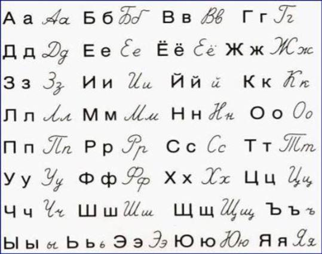
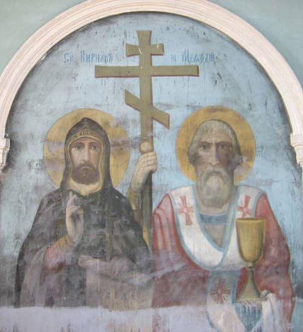
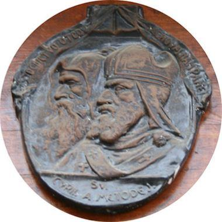
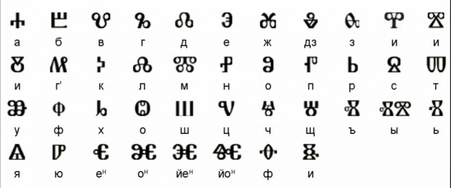

L’alphabet cyrillique russe moderne compte 33 lettres. C’est une écriture bicamérale, c’est-à-dire qu’il existe pour chaque lettre une minuscule et une capitale.
L'alphabet cyrillique - кириллица – est principalement utilisé pour écrire plusieurs langues des peuples slaves orthodoxes comme le biélorusse, le bulgares, le macédonien, le ruthène (langue ancienne disparue d'un peuple des carpates), le serbe, l'ukrainien, le vieux-slave, et bien entendu le russe. Les peuples slaves catholiques ayant l'alphabet latin.
Il sert également à écrire de nombreuses autres langues parlées en Russie, comme l'oudmourte (ou votiak), le khanty (ostiak), le nénètse (autre langue ouralienne) ou l'ossète, ainsi que le mongol ou même le doungane (un dialecte du mandarin, du peuple Hui). L'alphabet est alors complété par des signes ou des caractères spéciaux, destinés aux phonèmes qui n'existent pas en russe.

Alphabet cyrillique - кириллица
L'alphabet cyrillique est enfin également utilisé pour écrire des langues turcophones d'anciens pays de l'URSS, comme le kazakh ou l'ouzbek.
Pour le roumain parlé en URSS (sous le nom de « moldave »), le pouvoir soviétique a mis en place, jusqu'à 1989, l'usage de l'alphabet cyrillique russe moderne translittéré en lettres latines en Moldavie. Cet usage est valable aujourd'hui encore en Transnistrie.
L'alphabet cyrillique fut inventé vers 855, et porte le nom d'un Saint-Cyrille – Кирилл/Kiril.
Cyrille et Méthode – Мефодий/Méfodi – sont deux frères, natifs de Thessalonique, ville de l’empire byzantin où l’on parlait le grec et un dialecte slave. Ils étaient issus d’une famille riche et connue. Le frère aîné Méthode était officier et, comme tel, avait passé dix ans parmi les Slaves de Macédoine. Il avait appris la langue parlée. Ensuite, Méthode se retira sur la montagne de l’Olympe où il devint moine. Son frère Constantin (Cyrille) se joignit à lui, puis tous deux furent envoyés chez les Khazars lorsque le roi des Khazars demanda à l’empereur byzantin Michel des prédicateurs de la foi du Christ. Ayant convaincu le khan de la véracité de la foi du Christ, ils le baptisèrent avec un grand nombre de ses hommes d’armes mais aussi une grande partie de la population.
Après un certain temps, ils revinrent à Constantinople, où ils composèrent l’alphabet slave de 38 lettres et commencèrent à traduire les livres ecclésiastiques du grec en slave. Sur l’invitation du prince Rostislav, ils se rendirent en Moravie, où ils répandirent et affermirent la foi orthodoxe. Ils partirent ensuite à Rome, où le pape les avait invités. Là, Cyrille tomba malade et décéda, le 14 février 869. C’est alors que Méthode repartit en Moravie et travailla jusqu’à la fin de sa vie à l’affermissement de la foi parmi les Slaves. Après sa mort, le 6 avril 885, ses cinq disciples, avec le saint évêque Clément à leur tête, traversèrent le Danube et se dirigèrent vers le sud, en Macédoine, où, depuis Ohrid, ils continuèrent la mission commencée par saints Cyrille et Méthode.

Peinture dans une église du village de Kaga, en Russie, République de Bachkirie - Республика Башкортостан ou Башкирия
Une hypothèse soutient que l'alphabet cyrillique fait son apparition après le glagolitique – qui serait le plus ancien alphabet slave. Les scientifiques attribuent l'alphabet glagolitique à Cyrille. Ce serait le Bulgare Clément d'Ohrid, un de ses disciples qui aurait créé l'alphabet cyrillique, lui donnant le nom de son professeur pour lui rendre hommage.
 Relief sur la porte Kapucinska à Bratislava, SlovaquieL'alphabet cyrillique correspond à la composition phonétique de l'ancien slave et possède une graphie originale.
L'alphabet cyrillique remplaça rapidement l'alphabet glagolitique, d'abord en Bulgarie orientale, et notamment dans la capitale de l'époque, Preslav. À l’école d'Ohrid l'alphabet glagolitique fut plus largement répandu, et employé plus longtemps. Il existe quelques monastères au bord de la mer Adriatique, en Croatie, où le glagolitique a été utilisé en cryptographie jusqu'au XIXème siècle.

Alphabet glagolitique - Глаголица
Les ecclésiastiques vivant surtout dans la région de l'Adriatique du nord ont continué à utiliser l'écriture glagolitique jusqu'à la fin du XVIIème siècle, après quoi elle n'a été maintenue que dans la liturgie. Le dernier document en glagolitique date de la fin du XIXème siècle.
Une autre hypothèse soutient que Cyrille serait l'auteur des deux alphabets, ce qui signifie qu'il aurait traduit les principaux livres liturgiques deux fois. En 855, il aurait créé l'alphabet cyrillique dérivé de l'écriture grecque en l'adaptant au langage slave, pour traduire ensuite les livres liturgiques – богослужeбные книги/bogasloujèbnyé knigui pour les besoins des slaves de Moravie (l'Est de la Tchéquie) où il avait été envoyé comme missionnaire. L'œuvre de Cyrille et Méthode a été continuée par leurs disciples Clément, Naum, Anguélari, Gorazd et Sava qui, à leur arrivée en Bulgarie, ont reçu le soutien du roi Boris Ier.
Lorsque la Russie se christianise grâce à Vladimir en 988/989, l’Église russe va alphabétiser le peuple.
Saints Cyrille et Méthode ont été proclamés patrons de l'Europe en décembre 1980 par l'Eglise catholique qui fête ces saints frères le 14 février.
Dans la religion orthodoxe, le 24 mai est le jour de l’alphabet slave et des Saints-Frères Cyrille et Méthode.
Le 24 mai est une fête particulière (https://mospat.ru/fr/2014/05/24/news102870/) : jour « de l'écriture, de l'éducation et de la culture, fête de l'éveil spirituel, de l'aspiration au perfectionnement ».
L'alphabet cyrillique inventé par les deux saints frères, leurs traductions des livres liturgiques en vieux-slave, la défense du droit de chaque peuple à glorifier Dieu dans sa propre langue, ont une importance historique pour tous les peuples slaves.
D'ailleurs, chaque lettre – буква – de l’alphabet russe correspond à un mot – слово. Ainsi, les trois premières lettres, А Б В correspondent à « Aзъ Буки Веди », ou en russe d'aujourd'hui : « я буквы знаю » – « je sais les lettres ». L’alphabet entier est une forme d’hommage à l’apprentissage – учение/outchénié, à la connaissance – знание/znanié, à la raison – разум/razoum et au Seigneur – Господь/Gaspot’.
L'alphabet russe va connaître deux réformes qui simplifieront beaucoup l'écriture.
La première grande réforme date de 1708, on la doit à Пëтр Великий – Piotr Véliki/Pierre le Grand, qui supprime certaines lettres jugées inutiles, et modifie la forme de certaines autres pour se rapprocher de l’alphabet latin. Il va ensuite en rétablir quelques-unes pour adopter définitivement le nouvel alphabet en 1710.
Il est baptisé гражданица - grajdanitsa du mot гражданин - grajdanine/citoyen, pour le différencier de l'alphabet religieux, resté inchangé.
La deuxième réforme date de 1918 et va plus loin dans la simplification. Pour autant, le contenu de la réforme n’est pas l’œuvre du nouveau pouvoir soviétique mais d’une réforme du début du siècle, adoptée dès 1911 par le régime Tsariste. Ainsi disparaît notamment le signe dur « ъ » – твëрдый знак/tviordy znak, qui était obligatoire après toutes les consonnes dures en fin de mots. Certaines enseignes utilisent ce signe en clin d'œil à l'Histoire et pour singulariser leur image. C'est le cas du fameux restaurant historique Yar – Яръ - dont le fondateur était français !
Aujourd'hui, il nous reste donc 33 lettres, avec un point d'interrogation sur le Ё, qui est souvent remplacée par E sa sœur jumelle !
Il y'aurait encore beaucoup à dire au sujet de l'alphabet cyrillique ! Pour l'heure je m'arrête là, n'hésitez pas à compléter l'article avec vos commentaires.
Tentez d'apprendre l'alphabet russe actuel ! Je vous invite à vous abonner gratuitement à mon blog et recevoir en cadeau de bienvenue mon guide multimédia qui vous guidera en quelques heures vers la maîtrise de l'alphabet russe et des bases de la lecture !
Partager cette page